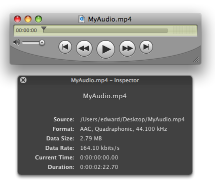

| ADC Home > Reference Library > Technical Notes > Audio > Core Audio > | |
|
IntroductionQuickTime allows content creators and application developers to export Movies as MPEG-4 ( This task may be accomplished using the QuickTime MPEG-4 Exporter or the QuickTime Movie Exporter (depending on the required file type, However, there is a subtle difference between the above mentioned export components when it comes to the AAC audio encoding options accessible and configurable with each. In some cases when creating an The DialogsAs an example, let's assume we want to export a source Our hypothetical export requirements are; an Let's see what we can do with each Exporter. Figure 1: PCM Source MPEG-4 Export SettingsTo view the
Figure 2: Movie to MPEG-4 Exporter. When exporting to AAC, you have access to the following options: Audio Format: None, AAC-LC (Music) or "Pass through" if the source audio is already AAC encoded. Data Rate: An Average bit rate (ABR) value in kilobits per second. A determiner of output audio quality, in general, the higher the data rate, the better the audio quality. The effective data rate is also affected by other compression options such as the sampling rate. Channels: Mono (1 channel) or Stereo (2 channels). Output Sample Rate: Also a determiner of output audio quality, the available sample rates presented in the pop-up will change depending on the data rate chosen. Selecting "Recommended" will allow the codec to make the best choice to achieve the best audio quality depending on the requested data rate. Encoding Quality: Good, Better or Best. The Good setting is optimized for the highest-speed encoding, for higher-quality choose Better or Best (optimal for 24-bit source). The tradeoff is between encoding speed and audio quality. QuickTime Movie Export SettingsTo view the
Figure 3: Movie to QuickTime Movie Exporter. With AAC selected as the format, you have access to the following options: Channels: Depending on the source, you have a number of audio channel layouts to choose from; Mono, Stereo, Quadraphonic, 5.1 (C L R Ls Rs LFE) and so on. Sample Rate: A determiner of output audio quality, the available sample rates presented in the pop-up will change depending on the data rate chosen. Selecting "Recommended" will allow the codec to make the best choice to achieve the best audio quality depending on the requested data rate and encoder strategy. Render Settings (Quality): The codec quality setting allows a choice between encoding speed and sound quality. There are five settings to choose from; Faster, Fast, Normal, Better and Best. Encoding Settings (Encoder Strategy): The bit rate allocation strategy for the codec; Average, Variable, Variable Constrained and Constant. A determiner of output audio quality, each setting allows optimization dependent on specific needs. See Encoding Properties In Detail. Encoding Settings (Target Bit Rate, Estimated Bit Rate or Bit Rate Range): Also a determiner of output audio quality, the data rate selected is coupled to the selected codec strategy. The ProblemIt is clear from inspecting the AAC audio encoding options available in each exporter that the QuickTime Movie Exporter presents a more robust set of encoding options. This allows for finer grain control over the creation of audio assets when using the AAC codec. Since it seems that the MPEG-4 Audio Exporter is somewhat simplified (we wouldn't be able to choose our required channel layout for example), how can a A two step export process must be used along with the MPEG-4 Exporters "Pass through" Audio Format setting. Two Step Export Using Pass ThroughConceptually, the two step export process is very straight forward; Using the same Step One
Figure 4: AAC Encoded Step TwoNow that we have our source AAC encoded to our specifications, we need to save it in a
The dialog should look like Figure 5. Figure 5: MPEG-4 Export Settings - Audio Pass Though Selected.
Figure 6:  Figure 6 shows the final But wait, there's more...If all this exporting and dialog configuration with QuickTime Player just to get all the available AAC encoding options is giving you a headache, you may be wondering if there's a way to do the same thing in a single step? The
To produce the same [theanalogkid:~] geddy% afconvert -v -f 'mp4f' -d aac@44100 -c 4 -l Quadraphonic -b 160000 -q 64 -s 2 /MyAudio.aif /MyAudio.mp4
Input file: MyAudio.aif, 6293438 frames, Quadraphonic
codec quality = 64
strategy = 2
bitrate = 160000
Formats:
Input file 4 ch, 44100 Hz, 'lpcm' (0x0000000B) 32-bit big-endian float
Quadraphonic -- overriding layout Quadraphonic in file
Output file 4 ch, 44100 Hz, 'aac ' (0x00000000) 0 bits/channel, 0 bytes/packet, 1024 frames/packet, 0 bytes/frame
Quadraphonic
Output client 4 ch, 44100 Hz, 'lpcm' (0x0000000B) 32-bit big-endian float
AudioConverter 0x811434 [0x134ef0]:
PCMConverter 0x13f8c0
Input: 4 ch, 44100 Hz, 'lpcm' (0x0000000B) 32-bit big-endian float
Output: 4 ch, 44100 Hz, 'lpcm' (0x00000009) 32-bit little-endian float
CodecConverter 0x137720
Input: 4 ch, 44100 Hz, 'lpcm' (0x00000009) 32-bit little-endian float
Output: 4 ch, 44100 Hz, 'aac ' (0x00000000) 0 bits/channel, 0 bytes/packet, 1024 frames/packet, 0 bytes/frame
Input layout tag: 6C0004
Output layout tag: 6C0004
Output file: MyAudio.mp4, 6295552 frames
Verbose -v: Simply prints the applications progress verbosely and is completely optional. File Format -f: The wanted output file format. Data Format -d: The wanted data format and sample rate. Specifying Number Of Channels -c: The number of channels for the output file. This parameter may be used to add or remove channels without any regard to channel order. Channel Layout -l: The channel layout for the output file or both input and output files. If specified once, the layout applies to the output file. If specified twice, the first layout applies to the input file while the second applies to the output file. Some tags that can be used are Mono, Stereo, Quadraphonic, AAC_5_1 and so on. A full list may be found in Bit Rate (bps) -b: Output data rate in bits-per-second. Quality -q: A value from 0-127 representing codec quality. See Encoding Properties In Detail. Encoding Strategy -s: A value from 0 to 3 representing encoding strategy:
For a detailed list of every possible parameter accepted by Encoding Properties In DetailRender SettingThe values in Table 1 are the Quality Render Settings available when using the QuickTime Movie Exporter or Table 1 : Constants used with
Encoding StrategyThese encoding strategies (a.k.a bit rate control modes) are used with the Constant Bit Rate (CBR) This mode achieves a constant target bit rate and is completely compliant to the CBR mode specified in the MPEG-4 standard. This mode is suitable for constant-bit-rate network transmission when decoding in real-time with a fixed end-to-end audio delay. However, due to the strict constant bit rate constraint, this mode offers the lowest audio quality and highest complexity among all the encoding modes offered. Average Bit Rate (ABR) A target bit rate is achieved over a long term average (typically after the first few seconds of encoding). Unlike the CBR mode, this mode does not provide constant delay when using constant bit rate transmission, but provides best overall quality while still being able to strictly control the resulting file size with less complexity than the CBR mode. Variable Bit Rate (VBR) The audio signal is encoded with constant (and settable) quality and virtually no bit rate constraints. This is the best mode to achieve consistent audio quality across many files and the smallest file size to achieve that quality. It also has the lowest complexity of all the encoding modes. Variable Bit Rate But Constrained (VBR Constrained) This mode is similar to VBR but limits the average bit rate variation. The lower limit is the user-selected bit rate. Higher bit rate is adapted for difficult tracks and can generate larger files than the ABR mode. Note: When using the VBR encoding strategy, This VBR sound quality level is configured in For example:
This property is currently not directly configurable when using the QuickTime Movie Exporter, it is mapped to "Estimated Bit Rate". ReferencesCompressing QuickTime Movies for the Web Document Revision History
Posted: 2009-01-27 | ||||||||||||||||||||||||||||||||
|